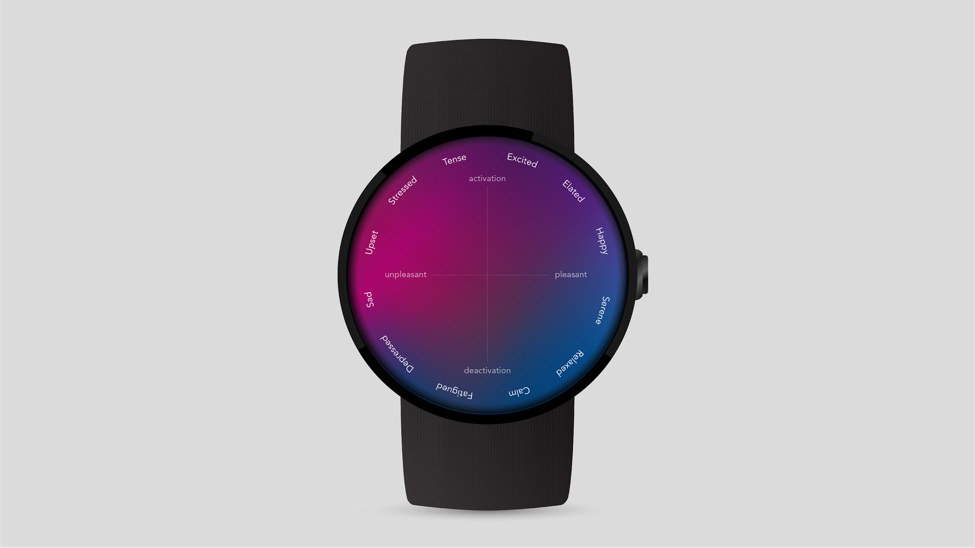

The goal of this project, on which we worked in a group of five, was to develop a prototype of a smartwatch for moods and emotions tracking. By gathering information about different emotions, which users experience throughout the day, this device can educate and motivate individuals toward better habits and therefore better health. It gives meditation technique in response to different emotions. The device aims to be connected with an app, which can build graphs for the specific periods and produce heat maps of emotions. The product development included initial user research in the form of interviews to identify needes of different age groups. The interviews revield, that the age of target group for such wearable ranges from 25 to 35 years old. According to the interviews, negative emotions experienced by the users overrule their lives and lead to stress and productivity loss. Meditation is considered to be something spiritual and not for everyone. People do not know how to track their emotions and how to deal with stress.
After conducting the interviews and user research, user persona was created. Based on it, storyboard and several mockups, showing different functionalities of the watch have been implemented. Below you can find storyboard and the mockup example.
View the full project here: open the project
